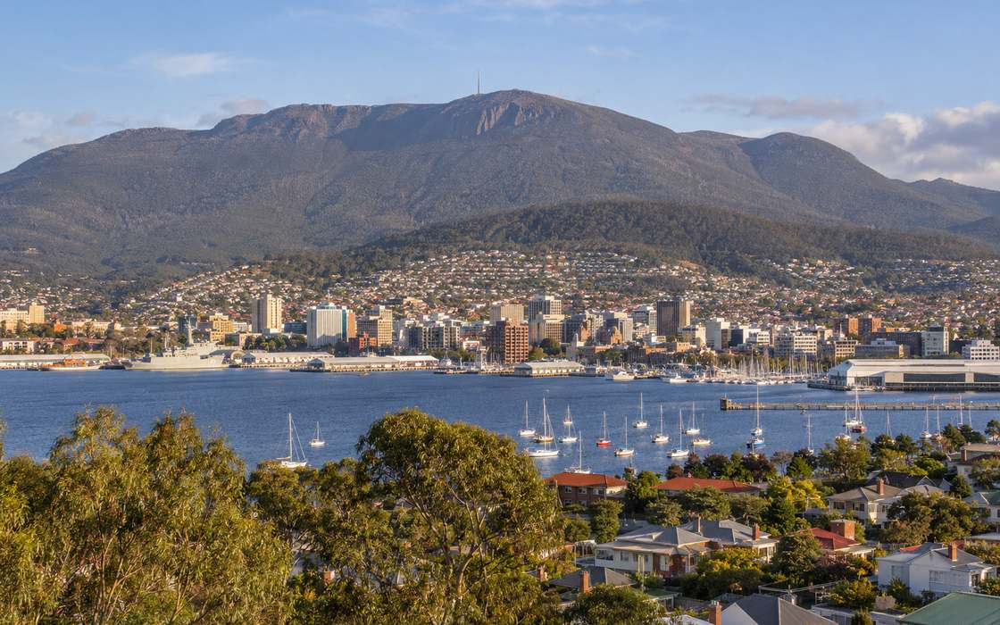

Conference & Event Venues in Hobart
Tell us what you need in Hobart. Shortlist within 48 hours, free to you.
Hobart is small enough for a conference group to take the city over, and interesting enough that they will want to. A working waterfront, a serious food and art scene, and the Tasmanian wilderness within easy reach. Venues range from waterfront hotels to character spaces around Salamanca. We source across the city and negotiate rates that account for travel from the mainland.
What we source in Hobart
- Waterfront and city centre conference hotels
- A self contained residential conference campus at Sandy Bay
- Bare waterfront exhibition space for builds and trade displays
- Gallery, museum and distillery venues for dinners and receptions
- East coast and highland lodges for executive retreats and incentive rewards
A few Hobart venues, and what each one is really for.
A spread rather than a ranking, chosen so you can see the shape of the market. Every figure below is the one the venue publishes for itself. We source right across Hobart, so treat this as a starting point.
Hotel Grand Chancellor Hobart
Hobart CBD · 243 rooms · Federation Ballroom to 1,200 theatre · 11 event rooms
The one complex that takes a full plenary, an exhibition and a gala without moving delegates.
Ask us about itWrest Point
Sandy Bay · 271 rooms · Tasman Room to 1,000 theatre · 24 event rooms
Self contained residential conferences of 300 to 1,000 on the largest single site room block.
Ask us about itCrowne Plaza Hobart
Hobart CBD · 241 rooms · Centurion Ballroom to 600 theatre · 8 event rooms
Straightforward mid size residential conferences in the city centre.
Ask us about itThe Tasman, a Luxury Collection Hotel
Parliament Square · 152 rooms · LUMINA to 180 theatre · 5 event rooms
Board level programs, incentives and awards dinners in a column free room.
Ask us about itPrinces Wharf 1
Sullivans Cove · The Shed to 1,200 banquet · 3 event rooms
Trade exhibitions and gala dinners for 1,200 in a bare waterfront shed you build out.
Ask us about itMona
Berriedale · 8 rooms · The Nolan Gallery to 450 cocktail
The one night of the program people will remember, reached by catamaran.
Ask us about itNot sure where in Hobart your event belongs?
A quick steer, based on what you are running. Tell us the detail and we will shortlist what suits it, rather than the obvious names.
Based on venue suitability alone.
Where in Hobart to hold it.
The area you choose shapes everything from how easily delegates arrive to what you will pay for dinner. These are the ones we source across most, and what each is good for.
Hobart CBD
Where the plenary and the room block sit in the same few blocks. Hotel Grand Chancellor, Crowne Plaza and The Tasman are all within a short walk of each other and of Salamanca, and delegates will not need a car.
Sullivans Cove waterfront
For a view or a raw space to brand. Princes Wharf 1 takes a full build, and the Mona ferry leaves from Brooke Street Pier, so offsite transfers start here.
Salamanca and Battery Point
The dine around and the social program rather than the plenary. Very limited large function space and mostly boutique accommodation, walkable from the city and the waterfront, which is precisely its value.
Sandy Bay
A self contained campus. Wrest Point holds the largest single site room block in Hobart, about five minutes from the city and twenty five from the airport, and the university next door suits academic meetings with tiered seating.
Berriedale
One high impact evening rather than the working day. Mona takes 450 standing in the Nolan Gallery, about fifteen minutes by road or twenty five by catamaran, and the ferry is part of the experience.
Regional Tasmania
When the destination is the point and the group is small. Freycinet suits an executive buyout of about forty, Cradle Mountain an offsite up to eighty five, and both are multi hour transfers, so build the flights around the lodge.
The parts of Hobart we would raise before you commit.
No destination is right for every brief, and the useful conversation is about where the limits are. These are the ones that change a Hobart program most often.
Late December is effectively closed
The Sydney to Hobart finishes into the city from 26 December and the summer waterfront festival runs through to early January, which takes Princes Wharf 1 out of the market and puts the whole city on peak rates. It is a wonderful week to be in Hobart and a difficult week to run a conference.
Dark Mofo prices mid June like summer
Winter is otherwise the value season here, but the Dark Mofo fortnight in June draws tens of thousands of interstate and overseas visitors and fills the city. Either build the program around it deliberately or avoid it.
Air capacity sets the delegate number, not the venue
There is no rail link anywhere in Tasmania and almost every mainland delegate flies. On most Hobart bids the practical ceiling on delegate numbers is seat availability into the city rather than the size of the room, so we look at the flight schedule before we look at floor plans.
Hobart is small, and that is exactly why it works for the right program.

One brief. A real person on the other end.
Everything above this point is information. It is genuinely useful, and no other venue finder in Australia publishes it. But it is not the thing you are actually buying.
What you are buying is someone who has already had the conversation with the person who holds that room, knows what they will move on and when, and will pick up the phone rather than send you a portal login. Whoever takes your Hobart brief stays your point of contact from the first call through to the final invoice.
Karen, Anthony, Chantelle and RychelleSourcing Australian conference venues since 1989
Venues we can speak for
A walkable city, food and drink that carry a program on their own, and research institutions on the doorstep make Hobart unusually strong for high value events under about 300. The honest limit is that above roughly 1,200 in one seated plenary the destination stops working, and we will tell you that before you commit.
The drawbacks as well as the pitch
Every venue has something worth knowing before you sign. A difficult load in, a low ceiling, a pre function space that struggles once the room is full. You will hear that from us at shortlist, not on the day.
Free to you
There is no fee for our service. The sourcing, the local knowledge and the negotiating are all included, and the rate you end up with is usually better than booking direct.
Hobart venue finding, common questions
How much does it cost to use CVBS to find a venue in Hobart?
How quickly can you find Hobart venues?
What is the largest conference venue in Hobart?
How many delegates can Hobart realistically handle?
Do you cover group accommodation in Hobart as well as venues?
Which Hobart venue has the most rooms on one site?
When should we avoid holding an event in Hobart?
Can we run an event at Mona?
Is Hobart good for a leadership retreat?
Planning something in Hobart? Tell us about it.
You will have Hobart options to consider within 48 hours.